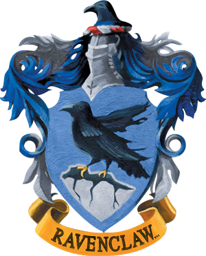
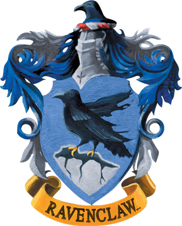

Looks like our secret is out , lets sort you into your houses now that you are here!
 



"I would never dream of assuming I know all of Hogwarts' secrets."
- Dumbledore, Headmaster, Grand Sorcerer Supreme
"The abandoned boys, had all found home here."
- Harry Potter, The Boy Who Lived, Auror, Voldemort's murderer
"Hoggy Warty Hogwarts Teach Us Something, Please."
- Hogwarts' Song, certfied lyrical genius
Send us an Owl or an Email (For Muggles)
Address - Somewhere in Scottish Highlands
Email - hogwartsadmissions@magicmail.com